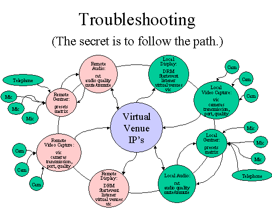

As nodes come on-line, the Access Grid provides
a research platform for developing distributed data and visualization
conduits and for studying distributed, creative collaboration.
The Access Grid assists its own development by providing the means
for collaboration among Alliance Grid system researchers.
Organizations must either build a "node" or find
a local access point.
Visit Argonne,
NCSA.
Managing an Access
Grid Node
This tutorial is dedicated to the true techies. Access Grid
node operators will find HPCERC procedures and policies. If
you are only looking to schedule time on the Access Grid, then
click here.
Readers can use this information to:
- Activation checklist
- Room diagram- typical
- Glossary
- Log book
- Request form
- Reservation procedures & staffing
Checklist for Activating the Access
Grid
1. Power on:
- Display monitor
- The audio, control, display, video PC's
- Video projectors by using their remote control- NEVER TOUCH
THE PROJECTORS! Use the white power buttons on the remote
control.
- Sound Mixer (Make sure sliders are all down before powering
up. Power is in back. Normally will not use phantom power.)
- Equalizer
- Gentner should ALWAYS be on.
- Speakers are autopowered- you do not have to deal with them.
2. The display monitor will be blue. The screen actually includes
the entire front screen.
3. Sign in as Administrator, hi6Lisi.
4. On Display (3) click on start-eventlistener icon on desktop
5. On Display (3) click on drm icon on desktop
VIDEO
6. Switch over to video (4) by using the select button on the
black display switcher.
7. Log into RedHat
- Login: username
- Password: password
8. Click on whichever window is activated. You can tell which
is activated because it is blue.
- cd /usr/local/ag/bin
- vrm-eventlistener
CONTROL
9. Switch over to control (2) Win98 by using the select button
on the black display switcher.
10. Start "Audio Perfect"
11. Select AHPCC-Online
AUDIO
12. Switch over to audio (1) by using the select button on the
black display switcher.
- Login: username
- Password: password
13. Select the window
- cd /usr/local/ag/bin
- arm-eventlistener
JOIN THE MEETING - check AG Schedule to see which room you
are in.
(WARNING - a manual boot-up is necessary when Netscape will
not connect. Substitute 14-26 with #37.)
14. Switch over to display (3) by using the select button on
the black display switcher.
15. Open Netscape
16. Goto URL: http://venues.accessgrid.org/AG/
17. Possibly you may have to log in.
- Login: username
- Password: password
18. Enter the AG
19. Move windows out of the way. BE DISCRETE if you have an
audience.
20. Stretch thumbnail window to include everyone in the room.
21. Put mouse in the thumbnail window, hit 8. You are now in
the lobby.
22. You can change window sizes by:
- s - small size
- m - medium (normal) size
- l - large size
- d - dismiss window (to close the window -- never click the
x) can also close window by clicking on thumbnail.
23. Slide windows over until you get to the desktop.
24. Start Simple MU
- Connections,
- Connect to,
- Your own account- Login: jshuckra Password: XXXXXXX
25. Go to access - you are now in the "MUD" or backchannel.
26. Pay attention to LCC- Lisa and RDO is Bob Olson
Additional Functions
27. To make a comment, use a double quote. Ex. "Which room
will the nanocruise be in?"
- Go to the correct room by opening a new Netscape window
in the lobby.
- the lobby has hyperlinks to all the rooms.
- The thumbnail window will close and restart
Hitting 4 refreshes the thumbnail window.
28. To Hear:
- Slide Gentner to 10 on mixer
- Slide Main to 10 on mixer
- Make sure the Line-In is selected on RAT.
29. To open our microphones:
- Select audio (1) on black display switcher
- Hit "talk" button in listings window
- Go back to display (3) on black display switcher
30. To adjust volume:
There are two ways to adjust the volume:
- Select audio(1) on black display switcher
- Left mouse button on desired site and adjust volume
on popup window. The "Participant UNMAG" window
appears. You want roughly 75% open on the slide bar. Ex.
If KU is suspected to be too loud, left mouse on their
name, then adjust.
- Use the Sliders on the mixer.
31. To switch audio to Telco
- Switch to Control (video 2)
- Double click New AP400
- Click Preset 2
- Click Telco
- Pick up phone and dial the requested numbers
- Dial 9 for toll free numbers
- Otherwise, get dialing access code from AHPCC authority
- Click the "On" button on the control screen
- Once the "On" is running, hang up the phone.
32. To adjust Telco volumes:
- "From Telco Receive" on control (video 2)
- Boost or lower gains
33. To adjust your microphones when in Telco:
- To Teleco Receive on control (video 2)
- Boost or lower gain
34. To hang up Telco:
- Click "Off" button on the Control (video 2)
- Switch to Preset 3
35. To display PowerPoint:
There are two ways to display PowerPoint:
1. Locate PowerPoint off the web by using mud or Access Grid
scheduler.
2. Download PowerPoint presentation before the presentation.
36. Distributed PowerPoint instructions:
- Find out which machine will be the remote SERVER (ask the
MUD)
- Download and save the .bat and PowerPoint show to I:\dppt3\
- Edit i:\dppt3\config.bat so that SERVER line has SERVER
machine name.
- click on registry icon on desktop
- click on agserv icon on desktop
- make sure that master is running on remote site if speaker
isn't local and if speaker is local that NO master is still
running at any other site before proceeding to next step.
- open a command window and type:
- if speaker is remote:
i:
cd dppt3
client <full path to ppt>\file.ppt
- -if speaker is local:
i:
cd dppt3
master <full path to ppt>\file.ppt
- (for example, if ppt is called show.ppt in i:\powerpoint
for local speaker master i:\powerpoint\show.ppt)
37. Manual Bootup
-If you can not log onto Netscape, use the manual bootup
- On Display (switch to 3) click "dis" (Display
Resource Menu) on start menu.
- Enter the room IP address. (See Green Tab Section in Red
Book)
- Hit "Start Capture"
- Switch to Video (switch to 4)
- Enter the room's video IP address in all three boxes
- Then hit "Start Capture" on the three boxes.
- Switch to Audio (switch to 1)
- Enter the room's audio IP address
- Hit Start Audio Capture
-Manual MUD Bootup:
- Switch to Audio (switch to 1)
- Open a new shell window
- Type in: telnet wfg.mcs.anl.gov 7779
- Type in: connect <username> <password>
- Use standard mud commands to communicate.
38. To shut down:
- Close video windows by hitting "dismiss." The
X button may hang up vic.
- Exit Netscape
- Hit Stop Event or Stop capture for Audio, Display, and
Video
- Logout
- Close control (2) by selecting 2 on black display panel
- Close all open windows on all four pc's
- Double click projector's power off button.
- Slide off mixer's sound ports.
- Shut off mixer and equalizer
- LEAVE GENTNER ON.
Room Diagram

AG Session Procedures
The following procedures for conducting an
Access Grid (AG) session at the AHPCC will be followed for all
sessions. The procedures consist of this description, the Agenda/Script,
and the Session Worksheet. Responsibility for AHPCC AG Services
is with Manager, HPC Systems Group who will delegate authority
and responsibility as required. Sessions will be conducted in
as professional manner as possible. .
Roles. The Access Grid is a service
provided to the AHPCC and other entities at UNM. The service
will be operated and maintained by a group designated from the
HPC Systems Group. Special troubleshooting support, additional
or improved capabilities will be provided from the HPC Systems
Group.
|
AG Services Coordinator:
|
Individual responsible for managing the AG Services;
reports to the HPC Systems Manager; develops and implements
procedures; supervises node operators
|
|
Node Operator:
|
Individual responsible for equipment setup and
preparation, conducting technical portion of session,
coordinating with other operators on the Grid
|
|
AG Technical Support:
|
Science, engineering and technical support staff providing
specialized technical support to the AG Services Manager
|
|
Session Host:
|
Individual responsible for conducting the session program
|
|
Presenters:
|
Individuals presenting on the Grid from AHPCC site.
|
|
Participants:
|
Individuals present at session from AHPCC site.
|
Procedures. The following procedures will be used whenever
a session is scheduled. Certain steps may be omitted when a
practice or research session is on line.
Step 1: Scheduling the Access Grid
- AG user makes request to AG Services Coordinator by completing
the "AG Request Form"
- AG Services Coordinator verifies the Session Host has checked
the availability of:
- AG @ http://www-fp.mcs.anl.gov/fl/accessgrid/schedule.htm
- AHPCC room @ http://www.ahpcc.unm.edu/Staff
- If both are available, makes reservation on both AG &
AHPCC room scheduler.
- Schedules an AG technician for the AHPCC.
Step 2: Pre-meeting Setups
- AG Services Coordinator orders node operator to prepare
for the meeting
- The node operator will use the request form to locate and
install any possible media. Media include:
- PowerPoint slides
- Emailed communications
- Web sites
- In-meeting handouts
- The node operator will print out and distribute the meeting’s
agenda.
- The node operator will also set up the equipment according
to the "Equipment Checklist"
& demands of "AG
Request Form." Equipment must be up and running at
a minimum of 30 minutes before the meeting. This is
a buffer zone to correct network problems.
- If request form desires a rehearsal, the AG Services Coordinator
will schedule a node operator accordingly.
Step 3: Conduct meeting
- Node operator will follow meeting’s agenda to cue media,
microphones, and camera
- Node operator will complete the "AG
Log Book." This helps diagnose troubleshooting.
- Upon completion of the meeting, the node operator will attach
the agenda to the log book
Access Grid Log Book
Session Date: ______________
Node Operator: ____________
Session Host: ______________
Start up time: ______________
Shut down time: ____________
Purpose of Session:
Node operators will:
- use the request form to locate and install any possible
media. Media include:
- PowerPoint slides
- Emailed communications
- Web sites
- In-meeting handouts
- print out and distribute the meeting’s agenda.
- set up the equipment according to the "Equipment
Checklist" & demands of "AG
Request Form." Equipment must be up and running at
a minimum of 30 minutes before the meeting. This is
a necessary buffer zone to correct network problems.
List any technical issues and their solutions:
*Please attach agenda to back of this page.
Access Grid Request Form
Please complete the following information. The information
ensures you have a successful meeting. Submit the printed form
to Jeff Shuckra, HPCERC's Access Grid Coordinator.
- Check that the Access Grid and AHPCC Grid rooms are available.
Please visit:
- AG @ http://www-fp.mcs.anl.gov/fl/accessgrid/schedule.htm
- AHPCC room @ http://www.hpcerc.unm.edu/intranet/
- Only make reservation if both rooms are available.
2. Session Host: ____________________________
- Session Host’s Phone Number: ______________
- Session Host’s email: _____________________
3. Direct phone number of remote side’s phone number in the
Access Grid: _______________
4. Time and date(s) of AG meeting:
- Begins: _____________________________________
- Ends: ______________________________________
5. Please check Yes or No:
|
Setup Questions
|
Yes
|
No
|
|
Will there be a speaker at OR questions from the AHPCC?
|
|
|
- If "yes", then will the speaker need close-up camera
positioning?
|
|
|
- If "yes", then will the speaker need any special media?
|
|
|
|
Will media be required during the session?
|
|
|
- If "yes", then please complete the following:
|
|
-What is the URL to the session’s PowerPoint slides?
|
|
-What URL’s are required during the session?
|
|
-List location of any additional electronic emails
involved with the session.
|
|
Does the session require a rehearsal?
|
|
|
- If "yes", then when will the rehearsal be held?
|
|
Please attach a printout of the meeting’s:
|
|
|
Access Grid Glossary
(updated weekly)
Please contact Jeff
Shuckra to make contributions.
Abilene
Abilene is a research project on high-bandwidth networks. It
is a version of the next Internet. It will eventually support
OC-48 connections.
Access Grid
The Access Grid is a software application running over a high
bandwidth network. The application includes a video interface
control (VIC) and a robust audio tool (RAT).
Access Grid Control Station (AGCS)
The AGCS is the base of operations. Its technologies run the
Access Grid. Every Access Grid node is custom designed according
to budgets and equipment availability. The following description
should be considered generic overviews.
Four PC's exist to isolate technical glitches. When trouble
arises, the operator may focus on the trouble PC. Other communication
channels continue despite the loss of one PC. Nodes that put
all technologies onto one PC run a dangerous risk of total collapse.
If one thing goes wrong, then everything crashes at their site.
They can not hear or see the remote sites.
They are set up in alphabetical order from left to right:
(1) Audio: This system controls the "rat" or the audio.
(2) Control: This system controls the Gentner echo cancellation.
(3) Display: This system controls the onscreen displays and
"mud."
(4) Video: This system controls the "vic" or the video.
Audio Equalizer
The audio equalizer is also a device that only the AHPCC uses.
It makes people sound more realistic rather than like a telephone
call.
Audio Mixer
The audio mixer should not really exist. The mixing functions
can be controlled by the rat. The AHPCC uses it because the
rat is not fully trustworthy.
Cameras
People 1 is the main room camera. It takes pictures of the local
participants.
Operator 2 is a backchannel camera. It takes pictures of the
Access Grid operator.
Speaker 3 takes pictures of lecturers that choose to stand beside
the screen.
The Access Grid operator is expected to run the cameras. Generally,
all shots remain static. Speakers and participants do not normally
move about the room. All cameras are controlled by the same
Sony remote control. You can flip between each camera control
by pressing the white buttons.
Control
The Gentner needs to be computer controlled. The AHPCC's control
computer is #2 going left from right.
Decibels
Decibels (dB) are the measurement unit of sound. At 0 dB the
human ear can not detect any input. The Access Grid nodes all
have their own decibel settings. You can set your site's levels
during the "nanocruise."
Display Monitor
The display monitor is for the operator's use only. It is the
first of four display screens. The other three projectors continue
the display. A window may be moved from the display monitor
over to the projectors by dragging the mouse. The display monitor
is hidden from the participants. It is usually loaded with technical
sites.
Distributed PowerPoint
Distributed PowerPoint is open-source software. It remotely
controls the far-end's PowerPoint. A d-channel is dedicated
to controlling the software.
Gentner Echo Cancellation
The Gentner controls the echo cancellation. It works in conjunction
with the control PC to stop feedback. Everyone on the Access
Grid is required to use a Gentner.
Internet
The Internet is a network of computers. It started as a military
function, became a research project, then was sold to industry.
Internet2
The Internet2 is a research project. It supported a very broadband
network. It is often confused with other research projects like
VBNS, Abilene, and Next Generation Internet.
Mixer
Mixers are control devices that blend various sound sources.
The rat and the audio both have their own mixers. The AHPCC
prefers to set its audio mixer at 10 decibels.
Multicasting
Multicasting is when multiple sites simultaneously distribute
and receive data to each other. A site sends a single stream
to its router. The router distributes it to multiple sites simultaneously.
Multicasting is the foundational concept of the Access Grid.
Nanocruise
Small test of the Access Grid.
People
The local participants sit at the table and around the room.
The far end participants are projected onto the screen.
The local Access Grid operator sits at the controls.
Projectors
The projectors are numbered from South to North. They do not
require much attention. Please do make sure to shut them off
after the program.
RAT
The robust audio tool (RAT) is the Access Grid's audio control
device. It is a software application that supports multicasting.
It allows for many developers are working to develop the RAT.
T1
A T1 is a data connection. It comes in two flavors: 1)24 56-64K
channels or 2)23 56-64K channels plus one d channel. It has
1.54 megabytes per second.
Remote Control
There are two handheld, remote controls. One is for the projectors'
power. The second is for the cameras.
VBNS - Very Broadband Network Systems
The VBNS was a research project sponsored by Sprint. Its purpose
was to support a large bandwidth network. Approximately 36 sites
served a total of 140 universities while on VBNS.
VIC
The video interface control (VIC) is a video control application
that multicasts. It can handle multiple streams of incoming
video while simultaneously streaming out.
Troubleshooting
Troubleshooting as a Process
Troubleshooting is a process. It is a systematic analysis of
facts. It uses empirical facts rather than "gut" feelings.
Use the following troubleshooting guide as a process of diagnosing
rather than as solving symptoms. This brief description hopes
to get Access Grid operators thinking in terms of a system rather
than a symptom. The scientific method is a systematic process
of examining facts, deriving empirical realities, and solving
problems. It keeps the technical support personnel focused on
a process.
Step 1: LISTEN to what people are telling you. They
have valuable clues.
Step 2: ASK people what they feel might be the problem.
You might be surprised at their accuracy.
Step 3: RECREATE the problem. This indicates the general
equipment involved with the problem. You can focus on the equipment
surrounding the problem.
Step 4: ISOLATE the problem. Reset each piece of equipment
back to default. One by one, change their settings to the desired
state. You have most likely found the problem when you recreate
the symptom.
Step 5: CORRECT the problem.
Step 6: NOTIFY the user and your boss that the problem
is fixed.
Step 7: DOCUMENT the problem in the operators log book.
Replication
The problem must be replicable in order to be scientifically
diagnosed.
Isolation
Following the pathway of the respective problem, test one variable
at a time; treat everything else as a constant. For example,
the pathway of an audio problem would be microphones, echo cancellation,
rat, line leveller, network, speakers.

Frequently Spotted Problems
|
Symptom
|
Causes
|
Solutions
|
|
Can not hear far end
|
- Power not on audio equipment
- Sliders not up on mixer
- RAT not in correct V.V. room
|
- Power on all audio equipment
- Move sliders to 10
- Double check RAT has correct IP address & port
|
|
Remote can not hear you
|
- Power not on audio
- Talk is not selected on RAT
- The RAT is not selecting from the Line-In input
- Gain is too low in RAT
- Gentner echo cancellation control is not activated.
- Wrong preset is being used in Gentner
- Mics are muted in Gentner
- Phantom power is not on Mics
- Audio sounds choppy or garbled
|
- Power on audio equipment
- Activate the talk button on RAT
- Cycle through the RAT’s inputs until re-arriving
at Line-In.
- Boost audio gain to approximately 68
- Double check Gentner is activated
- Check preset is correct: 1) Bridge 2) Telco only 3)
Network
- Unmute Mics in Gentner
- Activate phantom power to microphones
- A) Network may be losing audio packets. On Audio Station
in RAT, check the matrix for lost packets. B) A node
in multicast may not have the same audio configurations
in their RAT as everyone else. Usually, the AG community
sets RAT to 16 kHz Mono audio in the options. You must
be logged in as <root> to make changes.
|
|
No video
|
- No power into cameras
- Video feed is muted in VIC
- Can not find activated window
- Black video feed
- Seeing strange video other than camera
|
- Power on cameras
- Uncheck the mute feed in VIC
- May be activated, but sitting behind another window
- Lens cap may be on camera or light aperture is closed
- Check vic on Video Station that Device has S-Video
selected from the menu
|
|
Packet loss
|
1. Network is not processing packets
|
- Check beacon for packet loss. If it exists, run a
traceroute to pinpoint the cause.
|
|
Audio Feedback
|
1. Feedback occurs when two people are using Gentner's
Preset 1
2. Far end does not have setting correct
3. Gentner matrix is not correct
4. Far end has microphone next to speaker
|
- Only the telco bridge should use Gentner Preset 1.
- Isolate which site is causing the feedback by muting
them all then unmuting one at a time until source is
identified.
- Check Gentner matrix so that settings are consistent.
- Check that far end does not have microphones next
to speaker.
|
|
Barely hear speaker
|
- Speaker is too far away from mic
- Mic setting is low
|
- Move presenter closer to mic
- Check mic setting in Gentner is at least 5 Db
|
Access Grid Node Minimum Requirements
Futures Laboratory
Mathematics and Computer Science Division
Argonne National Laboratory
9700 S. Cass Ave.
Argonne, IL 60439
(fl-info@mcs.anl.gov)
July 2001
Overview
The Access Grid (AG)[1] infrastructure creates a collaborative
environment designed to provide seamless, interactive group-to-group
collaborations among groups that are not co-located. This enables
a rich set of interactions to occur by utilizing streaming media,
providing a semi-immersive environment in which the technology
fades into the background. Designed to be always on, instantaneous
interactions occur across widely distributed sites. In order
to effectively interact across the Access Grid, users are best
served by Access Grid Nodes conforming to a minimum set of standards
to provide the seamless semi-immersive environment. Similar
to other semi-immersive and fully immersive systems, the success
of the Access Grid is contingent upon the degree to which these
standards are achieved or exceeded. In the past AG Nodes have
had to conform to a specific hardware configuration. This was
to build a system that can be deployed widely enough to investigate
the open research questions in group-to-group collaboration.
Now that the AG is established, it is important to enable the
investigation of alternative AGN configurations. This document
specifies the minimum functionality required for a space to
be considered an Access Grid Node.
The Access Grid provides a group-to-group collaboration environment
with unique features including resources provided via a spatial
metaphor and the virtual collaboration spaces are persistent.
The architecture is open, extensible, scalable, and leverages
established standards. The Access Grid is made up into three
major parts, Virtual Venues Services, Access Grid Nodes, and
Access Grid Network Services. The Venues Services provide navigation,
discovery and security for resources. Access Grid Nodes are
spaces that are designed to provide comfortable, high fidelity,
natural interactions with Access Grid resources. Access Grid
Network Services provide capabilities such as venue recording,
stream processing, and bridging between the Access Grid and
other collaboration systems. Applications can use this infrastructure
to provide groups to share data, computing resources, and applications
among widely distributed participants.
The target use of the Access Grid involves 6-8 nodes that have
3-10 participants per node. The intent of the Access Grid is
to enable groups of collaborators to increase productivity by
reducing the work involved in finding expert resources, people,
publications, source code, data and computing resources. The
Access Grid is also used for classroom lectures, training, invited
talks, and collaborative activities such as strategy and management
meetings.
Inevitably, collaborations involve participants that are not
co-located with other participants. These users need to be able
to interact with the Access Grid as fully as their technology
permits them. Users that do not have a space that meets the
minimum requirements, but need to participate in AG based collaborations
can do so at a reduced level of functionality. Participants
without nodes connect to the AG venues through AG network services.
AG network services resolve the mismatch in capabilities between
the participants' environment and the rest of the AG. AG network
services that might be utilized to bring participants into the
collaboration include transcoding, subsampling and mixing services.
The same AG network services that allow users with reduced capabilities,
also provide the same services for users with extra capabilities.
AG Node Minimum Requirements
Major characteristics of the AGN include the size and layout
of the space, software environment, video capabilities, audio
capabilities, display capabilities, and network capabilities.
Each of these components contributes to the collective success
of the AGN at providing the seamless experience groups expect
when using the Access Grid.